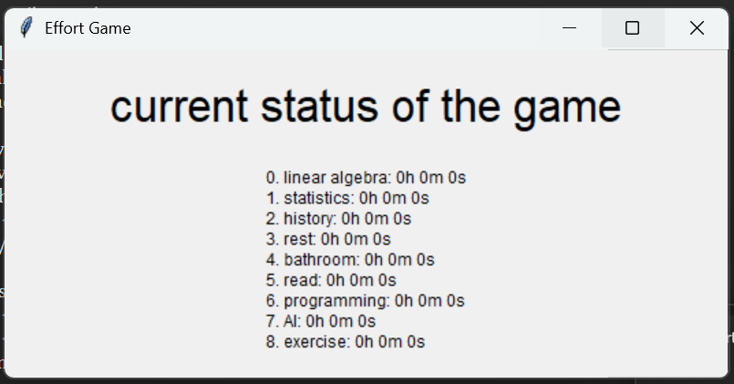
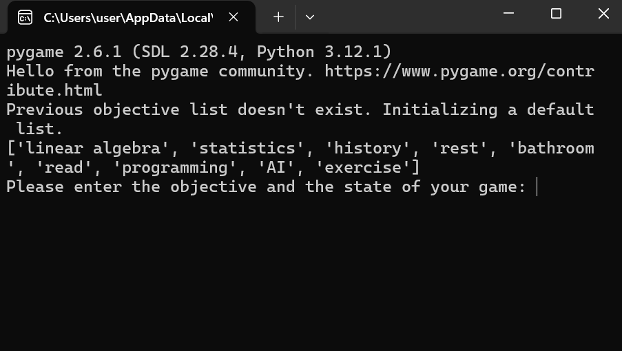

Tracking time spend on individual tasks(or objectives) by manually is repetitive and existing solutions doesn't provide real time tracking of total times spent on each tasks.
A time-tracking application built using Python, utilizing Tkinter for the GUI and CSV files for storing objectives. It features task tracking, state changes, sound notifications for long durations, and data persistence.
Users can add, remove, or modify objectives. Time spent on each task is recorded and displayed in an easy-to-read format. Sound alerts are triggered when a task exceeds 25 minutes. All data is saved at the end of each session.
Limited error handling (e.g., input validation). No advanced statistics or summaries of tracked time. GUI only shows task states; no deep analytics are available.
Enhance data analysis: Provide visualizations of task time. Improve error handling: Validate user inputs and automate task additions. Implement notifications: Allow for custom alerts and notifications for task durations. Mobile app version: Extend the program to work on mobile platforms